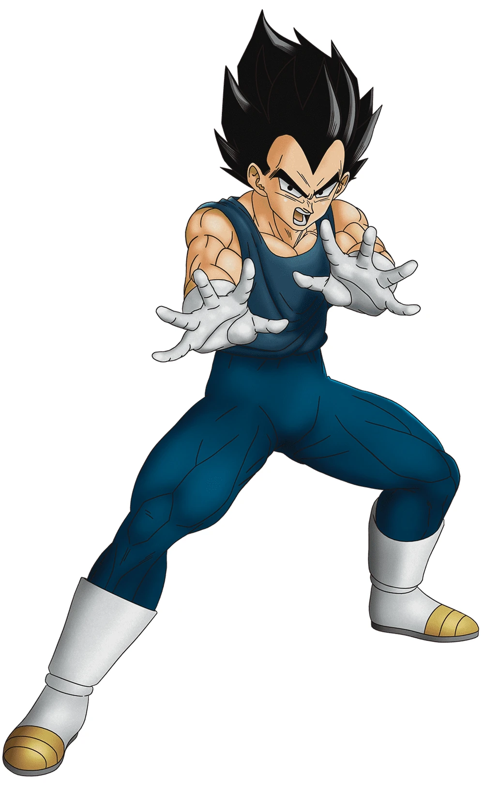

| Name |
Informations |
Power Level |
Son Goku |
Son Goku (孫そん悟ご空くう Son Gokū), born Kakarot (カカロット Kakarotto), is a Saiyan raised on Earth and the main protagonist of the Dragon Ball series. He is the second born, as well as youngest son and child of Bardock and Gine, the husband of Chi-Chi, and the father of Gohan and Goten. |
Goku's power level journey starts in "Dragon Ball" with modest beginnings, rapidly increasing through rigorous training and battles. In "Dragon Ball Z," he ascends from fighting Raditz with a power level of 416 to achieving Super Saiyan with a power level of 150 million. "Dragon Ball Super" sees him attaining godly forms like Super Saiyan God and Ultra Instinct, showcasing immense growth. Non-canon series like "Dragon Ball GT" and "Dragon Ball Heroes" further explore advanced transformations like Super Saiyan 4 and other limit-breaking forms, illustrating his continuous evolution and limitless potential. |
| Vegeta |
Vegeta (ベジータ Bejīta), more specifically Vegeta IV (ベジータ四世 Bejīta Yonsei), recognized as Prince Vegeta (ベジータ王子 Bejīta Ōji), is the prince of the fallen Saiyan race and the husband of Bulma, the father of Trunks and Bulla, the eldest son of King Vegeta, as well as one of the main characters of the Dragon Ball series. |
Vegeta's power level journey begins as a powerful Saiyan prince in "Dragon Ball Z," initially stronger than Goku. After losing to Goku on Earth, he trains relentlessly to surpass him. On Namek, he becomes significantly stronger, especially after near-death recoveries, but is outmatched by Frieza. In the Android and Cell sagas, Vegeta attains Super Saiyan and later Super Saiyan 2, continuing to chase Goku's progress. In "Dragon Ball Super," he achieves Super Saiyan God and Super Saiyan Blue, and eventually masters new techniques like Forced Spirit Fission. Non-canon series like "Dragon Ball GT" and "Dragon Ball Heroes" explore forms like Super Saiyan 4 and other powerful transformations, highlighting his relentless pursuit of strength and pride. |
Gohan |
Son Gohan (孫そん悟ご飯はん Son Gohan) is a half-breed Saiyan and one of the most prominent characters in the Dragon Ball series. He is the elder son of the series' primary protagonist Goku and his wife Chi-Chi, the older brother of Goten, the husband of Videl and father to Pan. He is named after Goku's adoptive grandfather, Gohan. |
Gohan's power level journey begins in "Dragon Ball Z" as Goku's son with immense hidden potential. As a child, his power surges during moments of intense emotion. He trains with Piccolo and fights in the Saiyan saga, showing significant growth. On Namek, his strength increases further through battles and near-death recoveries. In the Cell saga, Gohan becomes the first to achieve Super Saiyan 2, surpassing even Goku. During the Buu saga, he unlocks his Mystic/Ultimate form through Elder Kai’s ritual, reaching his peak power without transforming into a Super Saiyan. In "Dragon Ball Super," Gohan regains his Ultimate form and continues to train to protect Earth, though he doesn't achieve the godly forms of Goku and Vegeta. His journey is marked by bursts of extraordinary power and a focus on balancing his academic pursuits with his Saiyan heritage. |
| Future Trunks |
Future Trunks (未み来らいのトランクス Mirai no Torankusu) is a Saiyan-Earthling hybrid and the son of Vegeta and Bulma, both from an alternate future. By the time Present Trunks was born, the timeline had been drastically altered by Future Trunks' and Cell's trips to the past. Therefore, the two Trunks had completely different lives (as opposed to those who lived before the Time Machines arrived, who lived exactly the same lives as their counterparts until the point at which the two timelines diverge, three years before the androids arrived). |
Future Trunks' power level journey begins in "Dragon Ball Z" when he travels back in time to warn the Z Fighters about the Android threat. Initially, he demonstrates impressive power by effortlessly defeating Frieza and King Cold as a Super Saiyan. During the Android and Cell sagas, he trains with Vegeta in the Hyperbolic Time Chamber, achieving powerful forms like Super Saiyan Grade 2 and Grade 3. In "Dragon Ball Super," Future Trunks returns to seek help against Goku Black and Zamasu. He gains a new transformation, Super Saiyan Rage, which combines the power of Super Saiyan and his intense emotions. Throughout his journey, Future Trunks showcases resilience and growth, driven by his determination to protect his timeline from devastation. |
Piccolo |
Piccolo Jr. (ピッコロ・ジュニア Pikkoro Junia, lit. "Piccolo Junior"), usually just called Piccolo and also known as Ma Junior (マジュニア Ma Junia), is a Namekian and also the final child and reincarnation of King Piccolo, later becoming the reunification of the Nameless Namekian after fusing with Kami, at which point he was once referred to as Kamiccolo (神コロ様 Kamikoro-sama) by Goku. According to Grand Elder Guru, Piccolo, along with Kami and King Piccolo, are part of the Dragon Clan, who were the original creators of the Dragon Balls. |
Piccolo's power level journey begins in "Dragon Ball" as the reincarnation of the evil King Piccolo. Initially a powerful antagonist, he gradually becomes one of Earth's greatest defenders. In "Dragon Ball Z," he trains Gohan and shows significant growth during the Saiyan saga, particularly after merging with Nail on Namek, boosting his power substantially. In the Android saga, Piccolo's power surges again after merging with Kami, becoming one of the strongest Z Fighters temporarily. Throughout "Dragon Ball Super," Piccolo continues to train diligently, improving his techniques and strength. While he doesn't achieve the Saiyan-like transformations, Piccolo's strategic mind, powerful techniques, and dedication make him a vital ally and a formidable warrior throughout the series. |
Frieza |
Frieza (フリーザ Furīza, lit. "Freeza") is a major antagonist in the Dragon Ball franchise. He is the descendant of Chilled, the younger son of King Cold, the younger brother of Cooler, and the father of Kuriza. Inheriting his father's imperialist army and rising to power as the emperor of Universe 7 at a young age, Frieza quickly established himself as a ruthless tyrant, feared across the universe for his unparalleled cruelty and power. |
Frieza's power level journey begins as one of the most powerful and feared villains in the "Dragon Ball" series. In "Dragon Ball Z," he starts with a base power level that far surpasses most characters, demonstrating his dominance with multiple transformation forms that exponentially increase his strength, culminating in his final form where he battles Super Saiyan Goku on Namek. After his defeat, Frieza is rebuilt as Mecha Frieza but is quickly defeated by Future Trunks. In "Dragon Ball Super," Frieza returns, trains for the first time in his life, and achieves the Golden Frieza form, significantly boosting his power to rival Super Saiyan Blue Goku and Vegeta. During the Tournament of Power, he shows further growth, demonstrating cunning and resilience. Frieza's journey is marked by his relentless pursuit of power, transformations that drastically elevate his abilities, and his role as a persistent threat to the Z Fighters. |
| Cell |
Cell (セル Seru) is the ultimate creation of Dr. Gero, designed via cell recombination using the genetics of the greatest fighters that the Remote Tracking Device could find on Earth. The result was a "perfect warrior", possessing numerous favorable genetic traits and special abilities from Goku, Vegeta, Piccolo, Frieza, and King Cold. |
Cell's power level journey in "Dragon Ball Z" begins as a bio-engineered android created from the cells of Earth's greatest fighters. He starts in an imperfect form, absorbing energy from humans to increase his strength. Upon absorbing Androids 17 and 18, he transforms into his Perfect Form, significantly boosting his power level and abilities. In his Perfect Form, Cell is able to challenge and surpass many of the Z Fighters, even pushing Gohan to achieve Super Saiyan 2. During the Cell Games, he exhibits further growth by regenerating from near-death experiences, showing his adaptability and resilience. Ultimately, Gohan defeats him, but Cell's journey is marked by his rapid evolution, strategic intelligence, and ability to integrate the strengths of various fighters into his own arsenal. |
| Majin Buu |
Majin Buu (魔ま人じんブウ Majin Bū, lit. "Demon Person Boo") has many forms, all of which are linked below. However, each form has a different personality and goals, essentially making them separate individuals. All of Majin Buu's forms are simply referred to as "Majin Buu" in the series, but the various forms get their common names from various Dragon Ball Z video games. |
Majin Buu's power level journey in "Dragon Ball Z" is characterized by his numerous forms and transformations, each with distinct power levels and abilities. Initially, Buu is released from his sealed ball by Babidi, appearing as Innocent Buu with a childlike demeanor but immense destructive power. After absorbing Evil Buu, he transforms into Super Buu, who is much stronger and more intelligent. Super Buu's power increases further through the absorption of powerful fighters like Gotenks and Piccolo, and he becomes even more formidable as Buuhan after absorbing Ultimate Gohan. Buu's final and most dangerous form is Kid Buu, who, despite being smaller and more chaotic, possesses pure, unrestrained power. This form battles Goku and Vegeta in a fierce fight that ends with Kid Buu's defeat by the Spirit Bomb. Throughout "Dragon Ball Super," Majin Buu continues to evolve, undergoing training and transforming into more fit forms, though he often retains his playful nature. His journey is marked by a series of transformations that showcase his adaptability and relentless potential for destruction. |
| Broly |
Broly (ブロリー Burorī) is a powerful Saiyan mutant and the son of Paragus. He is the latest of Universe 7's Legendary Super Saiyans, demonic Saiyan warriors who appear every 1,000 years. Because of his power level that was said to exceed that of Prince Vegeta's, he was stranded on the planet Vampa by King Vegeta, where he was raised by his father until being rescued 48 years later by Cheelai and Lemo of the Frieza Force. |
Broly's power level journey begins in "Dragon Ball Z: Broly – The Legendary Super Saiyan" and is further developed in "Dragon Ball Super: Broly." Initially, in the non-canon movies, Broly is introduced as an exceptionally powerful Saiyan with an unstable and explosive power level, stemming from his traumatic past and innate potential. His base form is already incredibly strong, but his true power emerges when he transforms into the Legendary Super Saiyan, a form characterized by immense strength and a berserk fighting style. In this form, he easily overpowers Goku, Vegeta, and other Z Fighters. In "Dragon Ball Super: Broly," his backstory is revised, and his power is shown to grow exponentially during battles. After being found and recruited by Frieza, Broly fights Goku and Vegeta, demonstrating his base form's power and rapidly evolving strength. As the battle progresses, he ascends to a Wrathful state, tapping into the Great Ape's power without transforming, and eventually reaches a new, more controlled version of the Legendary Super Saiyan form. His power continues to grow during the fight, pushing Goku and Vegeta to fuse into Gogeta to defeat him. Broly's journey is marked by his raw, overwhelming power and potential for limitless growth, driven by his Saiyan heritage and intense emotions, making him one of the most formidable characters in the "Dragon Ball" series. |